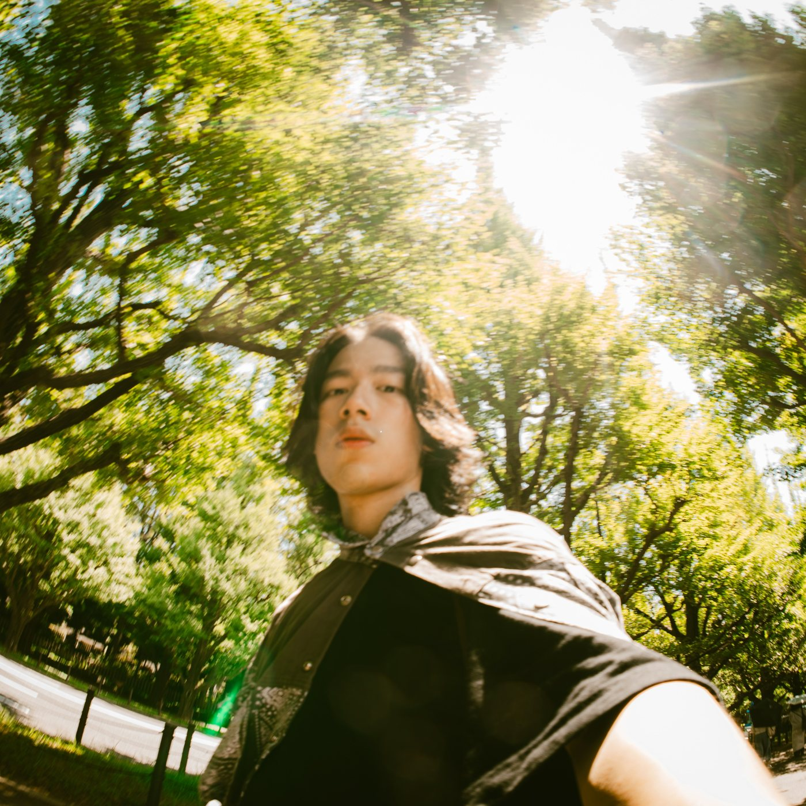

{{ e.cat }}
{{ e.head }}
{{ location }}
{{ s.no }}→
// 02 · ACADEMIC
{{ acadTitle }}
// 03 · WORK
{{ workTitle }}
{{ w.no }}
{{ w.tog }}
{{ w.title }}
{{ w.summary }}
{{ f.label }}
{{ f.text }}
—{{ li }}
// 04 · SKILLS{{ skillCount }}
{{ skillTitle }}
// ROOT
{{ brand }}
{{ skTotal }}
{{ skTotalLabel }}
SEC {{ p.no }}{{ p.serial }}
{{ p.name }}
工作方式 快速設計 → 製作 → 測試 → 迭代
⌂ {{ skBackLabel }}
←
{{ t.no }}
{{ t.label }}
{{ t.lv }}
→
{{ skBr.no }}
{{ skBr.name }}
（{{ skBr.sub }}）
{{ skBr.link }}
{{ hb.no }}
{{ hb.lv }}
{{ hb.name }}
{{ hb.link }}
{{ r.no }}
{{ r.name }}
{{ r.link }}
{{ skSel.cat }} · {{ skSel.no }}
{{ skSel.status }}
{{ skSel.name }}
// 04 · PHOTOGRAPHY
{{ photoTitle }}
{{ photoIntro }}
{{ r.main }}
{{ r.sub }}